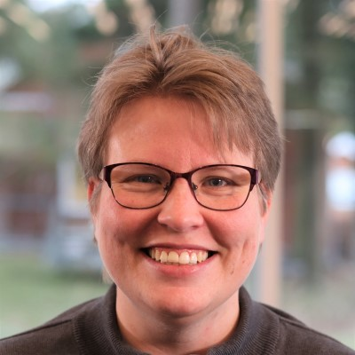
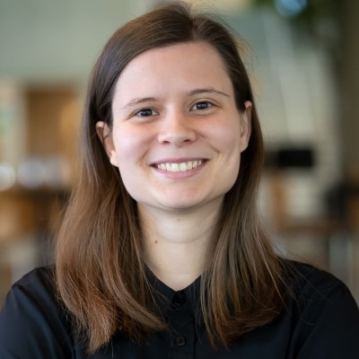

Lån Lokalt
Vores formål er at hjælpe hinanden.
Lån Lokalt er en mobilapplikation, der handler om at forbedre
lokalsamfundet, med muligheden for at undgå madspild, låne ting af
hinanden eller få plante og dyrpasning.
Vi er en gruppe studerende på Zealand Erhversakademi, der arbejder på et
softwareprojekt relateret til “Et udækket behov”.

